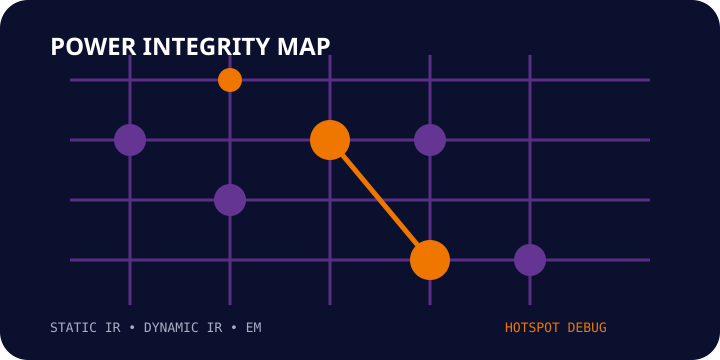

01. Power Intent Review
Understand the power-grid assumptions, modes and analysis setup.
 TERASILICON IQENGINEERING THE FUTURE OF SILICON
TERASILICON IQENGINEERING THE FUTURE OF SILICON
POWER SIGNOFF / CAPABILITY
STATIC IR • DYNAMIC IR • ELECTROMIGRATION • HOTSPOT DEBUG
Terasilicon IQ supports power-integrity analysis from violation triage through hotspot investigation, electromigration review and closure reporting.
Discuss your requirement →
ENGINEERING SCOPE
ENGINEERING APPROACH
Terasilicon IQ supports power-integrity analysis from violation triage through hotspot investigation, electromigration review and closure reporting.
FROM REQUIREMENT TO SIGNOFF
Understand the power-grid assumptions, modes and analysis setup.
Rank hotspots, investigate contributors and separate systemic from local issues.
Re-analyze fixes and maintain evidence toward power-integrity signoff.
APPLICATIONS
Identify local IR and EM risk before integration.
Investigate transient current demand and hotspot behavior.
Assess power-integrity impact after implementation changes.
Track open violations and closure evidence for final review.
SIGNOFF SUPPORT
Tell us what you are trying to close, verify or implement and we can discuss the engineering support that fits your project.
Start your requirement discussion →